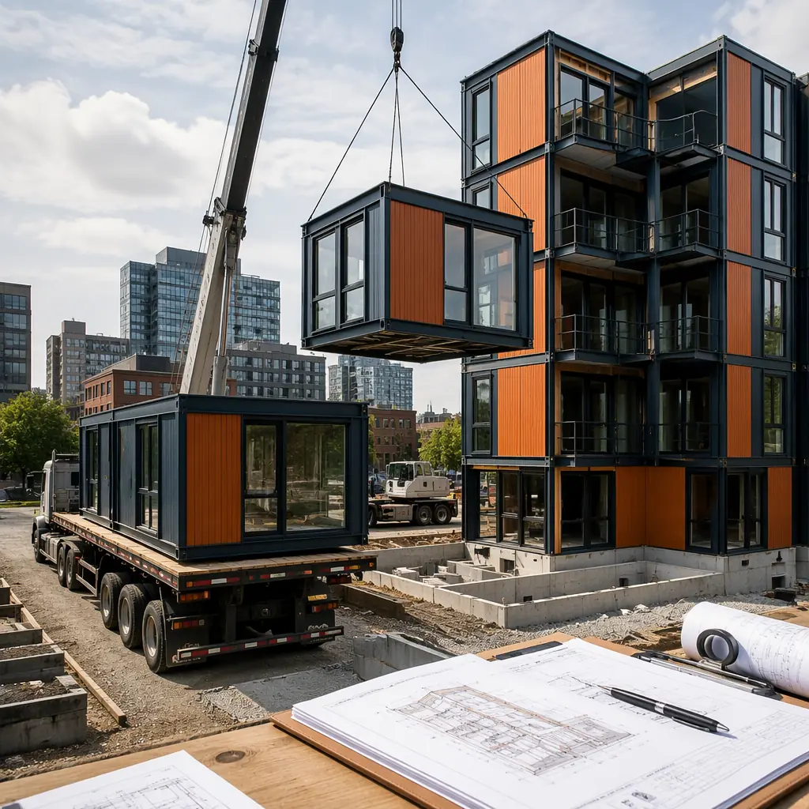
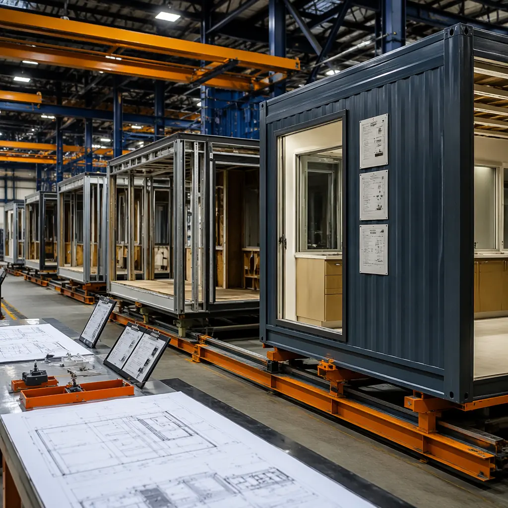
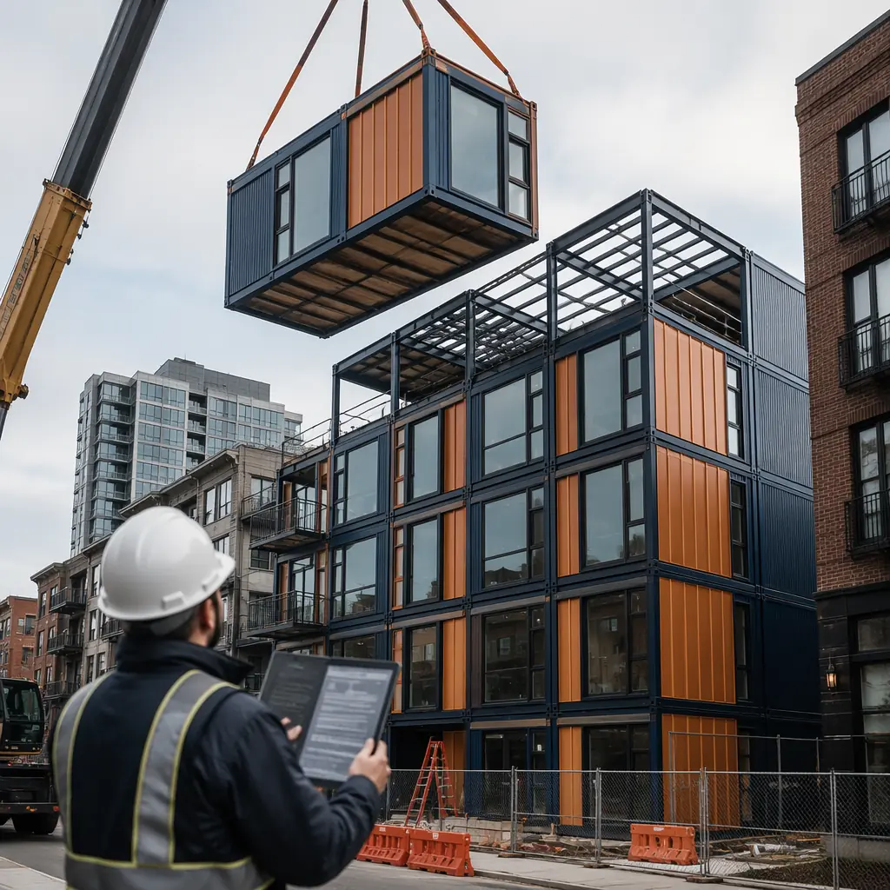
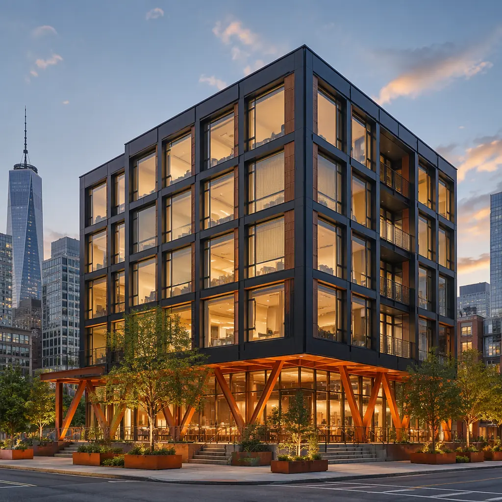

Permitting is the silent schedule killer in construction. A developer who has optimized the construction timeline to 14 months can lose 6–12 of those months to plan review, zoning variances, and building department approvals — costs that compound at the project's carrying cost rate of 6–8% per year. Modular construction changes the permitting equation, but not in the way most developers assume. The modules themselves are not permitted locally — they are certified under state or third-party industrial programs that operate in parallel to local building department review. This parallel-path permitting structure is the single largest schedule advantage that modular construction offers, and it is the least understood by developers entering the modular market for the first time. This guide explains the dual-path permitting system, the jurisdiction-specific variations that determine your approval timeline, and the four most common reasons modular permits are rejected — with the documentation package that prevents each one.

The Dual-Path Permitting System: Why Modular Reviews in Parallel
Conventional construction follows a single, sequential permitting path: the architect submits plans to the local building department, the department reviews for code compliance (typically 4–12 weeks), the department issues a permit, and construction begins. Every structural detail, MEP routing decision, and fire-rated assembly is reviewed by one jurisdiction in one sequence — and the entire project sits idle during plan review.
Modular construction operates on a dual-path system that splits the permitting into two parallel tracks:
Track 1: State/third-party module certification. In 35 US states, modular building modules are reviewed and certified under an industrial program administered by the state (e.g., California HCD, Texas IHB, Florida DBPR) or a third-party agency operating under state authority. The module manufacturer submits the module design — structural engineering, MEP systems, fire-rated assemblies, and accessibility compliance — to the state program, not to the local building department. The state reviews and certifies the module design once, and that certification applies to every module of that design type produced by that manufacturer, across all projects in that state. The local building department's role in module review is limited to verifying that the state certification label is affixed to each module and that the module's certification covers the building's occupancy classification. The local department does not re-review the module's structural engineering or MEP design — the state has already done that.
Track 2: Local site work and foundation permit. The local building department reviews and permits the site-specific elements: foundation design, utility connections, site grading and drainage, fire access roads, and the module-to-module connection details (which are project-specific and not covered by the state certification). This review is typically 4–8 weeks — comparable to a conventional permit review but significantly narrower in scope, because the entire building above the foundation has already been certified by the state.
The critical advantage: these two tracks run in parallel. The state certification for the module design can be obtained months before the developer even acquires the site, because the certification is for the module type, not the specific project. By the time the developer submits the site permit application, the module design is already certified. The local building department reviews only the foundation and site work — a 4–8 week review instead of the 12–20 week review required for a full building permit. For healthcare and government projects, the same dual-path approach applies, as discussed in our articles on modular hospital construction and modular government and municipal buildings.

Zoning: Where Modular Projects Face Their Biggest Hurdle
Zoning ordinances in most US jurisdictions were written decades before modular construction achieved mainstream adoption, and the language reflects assumptions that no longer hold. The three zoning issues that most frequently block modular projects:
"Manufactured housing" exclusion. Many residential and mixed-use zones include language prohibiting "manufactured homes," "mobile homes," or "trailers." The legislative intent was to exclude HUD-code manufactured housing (single-wide and double-wide units on chassis). But building department staff sometimes interpret this language to include modular buildings, despite modular buildings being constructed to IBC (International Building Code) standards rather than HUD code. The solution is a letter from the modular manufacturer's engineering team, supported by the state certification documentation, that distinguishes IBC-compliant modular construction from HUD-code manufactured housing. This letter should cite the specific IBC chapters (Chapter 6: Types of Construction, Chapter 7: Fire and Smoke Protection Features) that the module design satisfies — demonstrating that the building is classified under the same code provisions as a site-built structure.
Height and setback restrictions. Modular apartment and hotel buildings often exceed 4 stories and 60 feet in height — triggering zoning provisions that were written for podium-and-stick construction. Steel-framed modular construction is lighter than concrete podium construction and can often meet the same height with smaller foundation loads, but the zoning text may not account for this. Developers should request a zoning interpretation letter from the jurisdiction early in the entitlement process — before submitting a building permit application — to confirm that the modular building's height and setbacks comply with the zoning ordinance as written. See our guides on modular apartments and modular hotel construction for building-type-specific zoning considerations.
On-site assembly classification. Some jurisdictions classify modular module delivery and crane assembly as "construction activity" (subject to standard construction hours and noise ordinances), while others classify it as "industrial delivery" (subject to truck route restrictions, axle weight limits, and nighttime delivery prohibitions). The difference determines whether your crane can operate from 7 AM to 3 PM (construction hours) or must operate between 10 PM and 5 AM (when truck route restrictions are lifted for oversize loads). This is a project-specific determination that requires early coordination with the jurisdiction's transportation and building departments — and it should be resolved during the entitlement phase, not during construction.
State-by-State Timeline Comparison
Modular permitting timelines vary dramatically by state, driven by whether the state has an established modular program with dedicated review staff or whether modular projects are processed through the general building permit pathway:
| State | Modular Program | Module Certification Timeline | Site Permit Timeline |
|---|---|---|---|
| California (HCD) | Established, dedicated staff | 8–12 weeks | 6–10 weeks |
| Florida (DBPR) | Established, high-volume | 6–10 weeks | 4–8 weeks |
| Texas (IHB) | Established, modular-friendly | 4–8 weeks | 4–6 weeks |
| New York (DOH) | Established, slower review | 12–16 weeks | 8–14 weeks |
| Illinois (no state program) | Third-party (ICC/MBI) | 10–16 weeks | 8–12 weeks |
| Colorado (no state program) | Third-party (ICC/MBI) | 10–14 weeks | 6–10 weeks |
In states without a modular program, third-party agencies accredited by the International Code Council (ICC) or the Modular Building Institute (MBI) provide module plan review and inspection services that are accepted by most local building departments. The timeline is longer — 10–16 weeks versus 4–10 weeks in states with dedicated programs — but the parallel-path advantage still applies: the module certification runs concurrently with site entitlement, not sequentially.

The 4 Most Common Modular Permit Rejections — And How to Prevent Each
Based on data from state modular programs and third-party review agencies, these four issues account for approximately 70% of modular permit rejections. Each is preventable with the right documentation package submitted at the right time:
- Incomplete state certification documentation (28% of rejections). The local building department requests the module certification package and receives an incomplete set. Required: state-issued certification label number for each module type, certification scope statement (confirming the module design covers the building's occupancy classification and number of stories), and the certifying agency's contact information for verification. Include all three with the site permit application; do not wait for the building department to request them.
- Fire-rated assembly continuity at module joints (22% of rejections). The local plan reviewer cannot verify that the module-to-module fire-rated assembly meets the IBC requirements for the building's construction type. Required: UL 2079 or ASTM E1966 fire test report for the specific joint system used, engineering letter confirming that the joint detail maintains the fire-resistance rating of the adjacent assemblies, and a section drawing showing the joint detail in the context of the floor and wall assemblies. See our article on modular construction fire safety for the assembly-level fire engineering data.
- Accessibility compliance not documented to local standard (18% of rejections). The state certification covers accessibility at the module level (door widths, turning radii, bathroom clearances), but the local building department may require project-specific accessibility documentation for the site elements: accessible route from the public right-of-way to the building entrance, accessible parking stall count and location, and accessible route within the site. Required: a site accessibility plan drawn by a licensed design professional showing these elements — submitted with the site permit application, not as a response to a plan review comment.
- Zoning use classification mismatch (12% of rejections). The building permit application describes the project in terms that do not match the zoning approval. For example: the zoning approval is for "multi-family residential, R-2," but the building permit application describes the project as "modular apartment building." The building department flags the discrepancy and returns the application for clarification. Required: the building permit application should use the exact zoning use classification from the zoning approval letter, not a descriptive project name. See our articles on mixed-use modular developments and modular building design flexibility for project-type-specific zoning strategies.
The Developer's Pre-Application Checklist
Before submitting a modular building permit application, complete this checklist. Items marked with an asterisk require a licensed design professional:
- State module certification package — certification label numbers, scope statement, and third-party agency contact. Obtain from the modular manufacturer at contract signing; do not wait for the permit phase.
- Zoning interpretation letter* — confirming that modular IBC-compliant construction is permitted in the zone and meets height, setback, and lot coverage requirements. Request during the entitlement phase, before the building permit application.
- Module joint fire test report — UL 2079 or ASTM E1966 test data for the manufacturer's joint system. Request from the manufacturer's engineering team; this should be a standard deliverable in the manufacturer's contract. For the quality assurance framework behind these deliverables, see our modular construction factory QC guide.
- Site accessibility plan* — accessible route, parking, and site elements. Submit with the site permit application.
- Structural foundation plans* — designed for the specific module loads and connection points. The modular manufacturer provides module point-load data; the project's structural engineer designs the foundation to receive those loads.
- Utility connection drawings* — showing the interface between module-installed MEP systems and site-installed utility connections. Coordinate with the modular manufacturer during the design phase to ensure module utility stub-out locations match the site utility plan.
- Transportation and crane plan — module delivery route, crane location and capacity, traffic control plan. Submit to the jurisdiction's transportation or public works department, not the building department. Approval should be obtained before the first module ships from the factory.
- Energy code compliance documentation — COMcheck or REScheck report demonstrating compliance with the applicable energy code (IECC 2021 or ASHRAE 90.1-2019). Modular buildings with factory-installed continuous insulation typically exceed energy code requirements by 15–25%. See our modular energy efficiency guide for the performance data.
For the construction partner selection process that ensures these documentation deliverables are met, see our 10-point modular construction partner evaluation checklist. For the financial analysis that incorporates permitting timeline into project pro-forma, see our modular construction financing guide.
